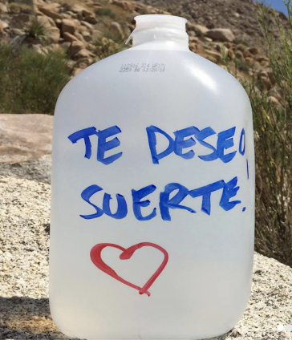

A Border Angel is a member of an advocacy group that fights for humane immigration reform, seeks to inform people about what is going on at the border, and leads trips to the desert to do water drops so that people crossing don't die from dehydration.
Using Unity and Rhino 3D I created a navigable environment in which the player acts as a Border Angel dropping off water on the U.S - Mexico border. I chose this environment as a reaction to what was and is still happening on the border regarding immigration. After reading this article, in which they interview Enrique Morones, founder of the Border angels, about what it's actually like crossing the US-Mexico border, I wanted to create a narrative that highlighted the role that these volunteers play as well as the risks they are taking to help. The opposing force in this environment are also based on a real group: the MinuteMen, a militia who takes it upon themselves to make citizen's arrests, slice open water jugs, and patrol the border with their weapons.
This concept came about after reading an interview about what it is really like to cross the border illegally. I knew that I wouldn’t be able to do it justice or have the knowledge or viewpoint of using the POV of an immigrant, so I was very interested in third parties like the Border Angels. I decided that the goal of the game would be to drop off gallon-sized bottles of water while avoiding being caught by the Minute Men patrolling the area. Once 5 water jugs are placed the final goal is to make it back to the start point. If successful, you’ve potentially saved lives. If caught, a civil arrest has been made and the work you’ve done has been undone by the Minute Men.
Minute Men: photo, sketch, 3d Model
In the game there are Minute Men patrolling throughout the whole environment. If the player comes too close to one of them and is in the range of their flashlights, they have been caught and the flashlight will turn red.
Water Jug: Photo, 3d Model
The water jugs are the main object in the game. In order to win you must drop them in certain bushes. To find the correct bushes you must walk around and look for those that light up as you get close to them, then left click and the jug will be placed within the leaves of the bush.
I really enjoyed working on this project and would love to continue learning more about the Border Angels and other third party volunteer groups. I would love to explore the potential of reaching out and working with them to create an elevated version of the ‘game’ or even a version that could act in a similar way as Freerice.com which works with the United Nations World Food Programme and donates rice to those who need it as you asnwer vocabulary questions.
It is super important to find a topic that you truly care about. When I first stumbled upon the article that started this whole thing, I couldn’t stop reading it. I knew I wanted to explore the topic of immigration, however I was struggling with how to approach it. When I learned about the Border Angels and the things that they do I felt like I had found something truly special and I wanted to learn as much as I could about them, and spread the work that they do and the risks that they take for others. I need to care about something to want to learn about it, and I need to learn about it to make something I care about. If you want to help out the Border Angels visit their site here!